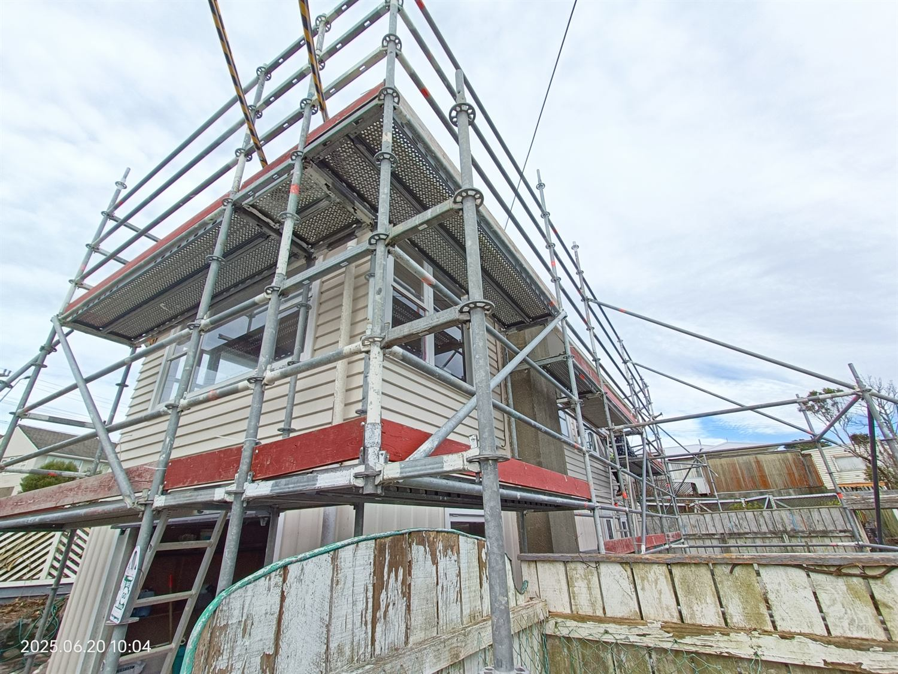
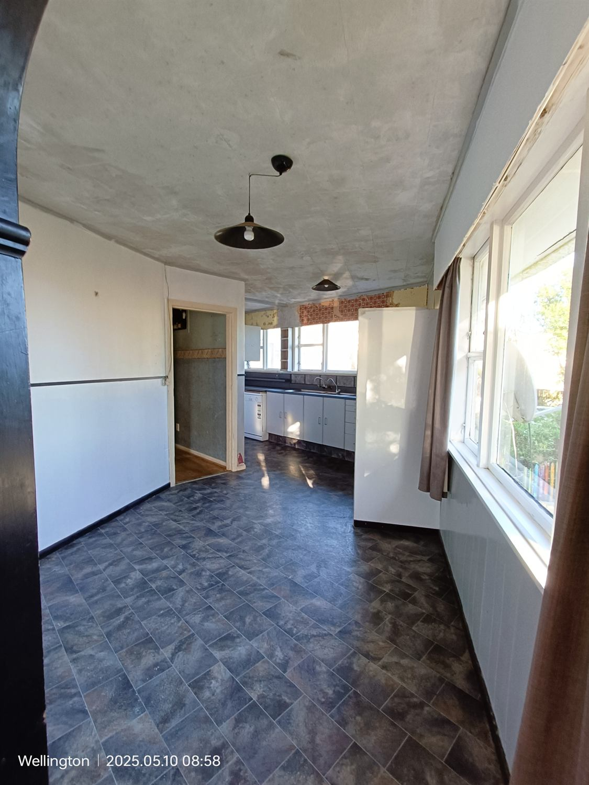
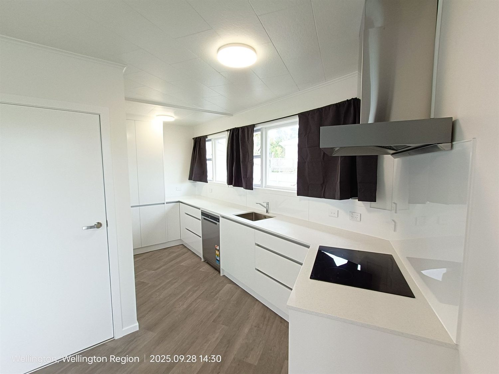
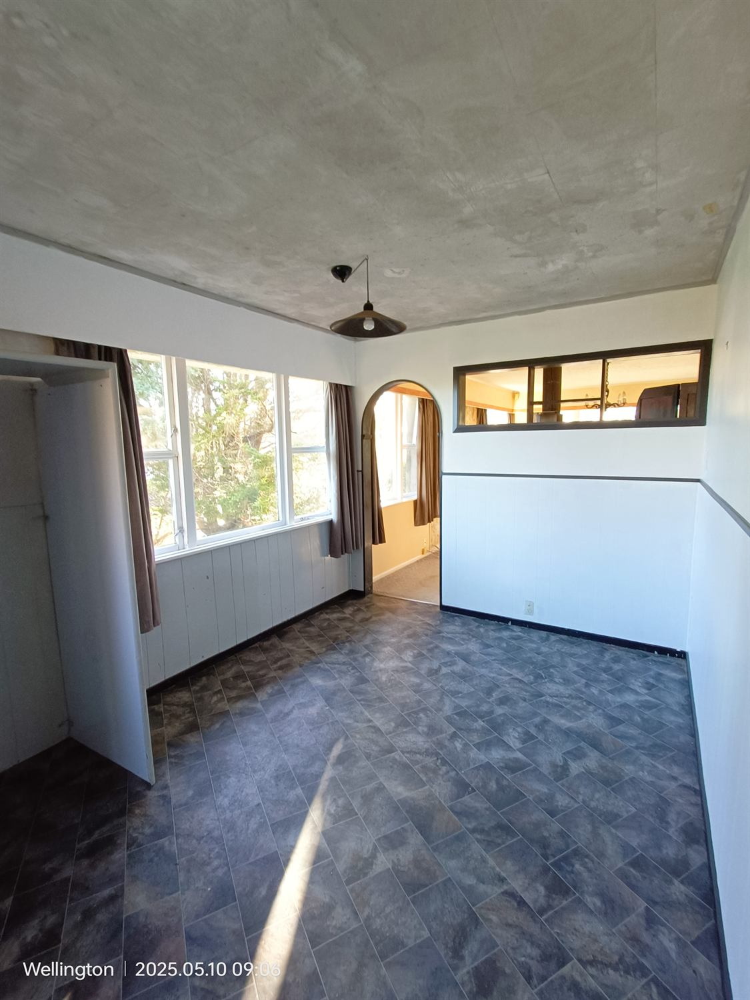
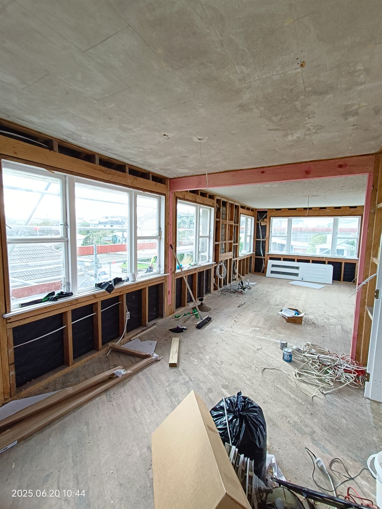
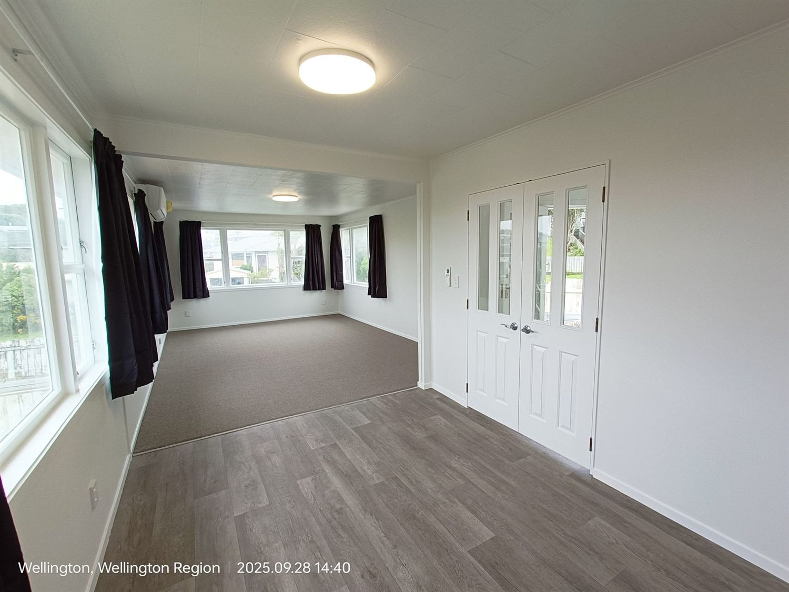
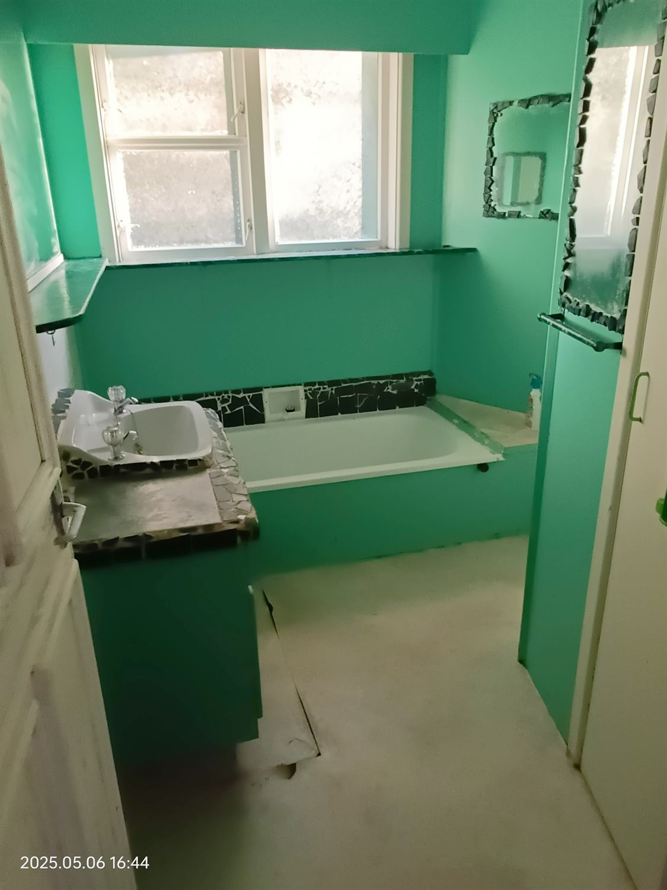
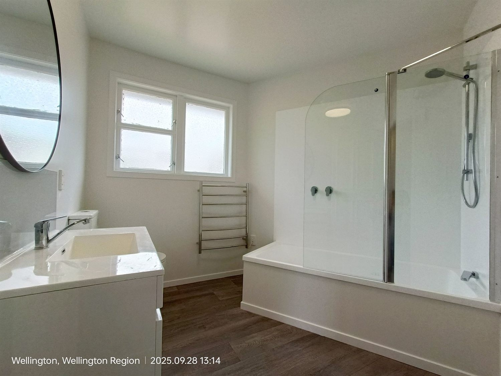
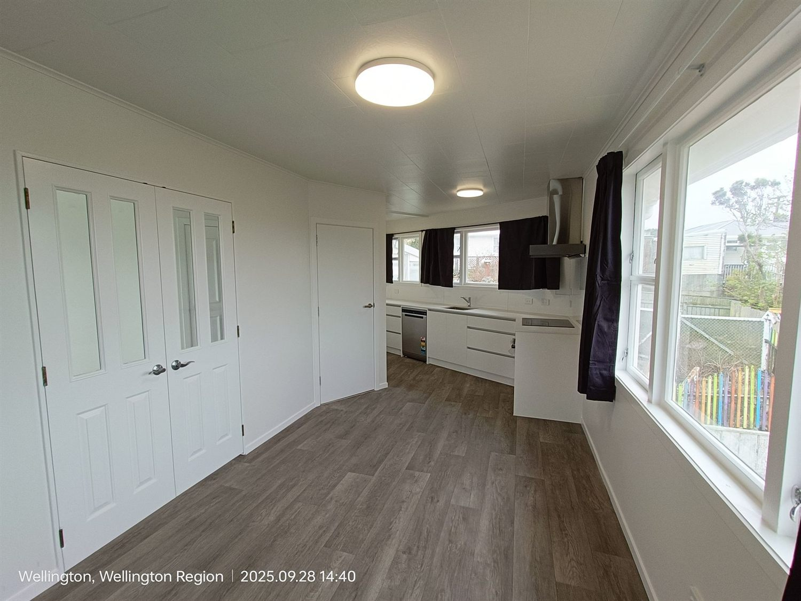

What we have
worked through.
These projects show the practical decisions behind a property outcome: purchase price, scope, hidden costs, rental result, value uplift and lessons learned.
Hidden complexity,
handled calmly.
A good-looking off-market opportunity with real site and renovation risk: overgrowth, awkward layout, sloping land, exterior height work and scaffolding costs.
Purchased for $540,000, renovated, then held as a rental.
We bought this Newlands property in May 2025 after our backup offer was accepted. The initial walkthrough was limited, and the overgrown section meant we could not fully inspect the outside before committing.
Once we took possession, the real complexity became clear: heavy vegetation, awkward historical alterations, a sloping rear section and exterior work that required scaffolding. The renovation included a new kitchen, bathroom, interior repaint, exterior painting, roof tidy-up, layout improvements and major landscaping.
The project spend was approximately $130,000, including construction work, landscaping and holding costs. That came in below the original $150,000 renovation budget, largely because we completed a significant amount of labour ourselves, including wallpaper stripping, tree clearing, rubbish removal and general clean-up.
Always walk the full section before making an offer. A two-storey home on sloping land can add serious scaffolding and access costs across several trades. Personal labour can protect the budget, but it still has a real time cost.









